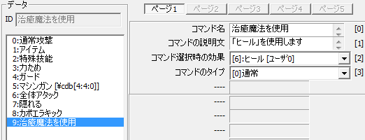
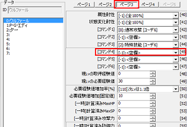
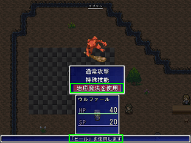

１：ユーザーデータベース
２：可変データベース
まずは、ユーザーデータベース
【目標】
サンプルゲーム内の主人公、ウルファール（青い人）に、選択すると「ヒール」の魔法を使用するコマンドとして
「治癒魔法を使用」のコマンドを追加します。
ちなみに、既存の技以外を追加したい場合、下記の説明の「ヒール」に関する部分を独自の技に置き換えてください。
新しい技（魔法）の追加方法は、技能（魔法）の種類を増やしたいの項目を参照して下さい。
【コマンド作成方法の概要】
コマンドを作成し、主人公（味方）に使用させるには、大きく分けて以下の２つのことを行います。
１：ユーザーデータベース で、コマンドを追加
で、コマンドを追加
２：可変データベース で、主人公（味方）にコマンドを設定
で、主人公（味方）にコマンドを設定
まずは、ユーザーデータベース で、コマンドを追加しましょう。
で、コマンドを追加しましょう。
| 【1】 ユーザーデータベース 右のようなウィンドウが表示されます。 |
 |
| 【2】 恐らく「タイプ」の設定が「0:技能」になっているので、 これを「6:戦闘コマンド」に変更して下さい。 |
|
| 【3】 そのまま右の方を見ると、↓のような一覧が表示されています。 現在使用されていない「9:」へ、新しいコマンドを設定しましょう。 （↓図では、コマンド名に「治癒魔法を使用」を入力しているので、 コマンド名と連動して、「9:」から「9:治癒魔法を使用」となっています） ↓図のように、コマンド名に「治癒魔法を使用」を、 コマンドの説明文に「「ヒール」を使用します」を、 コマンド選択時の効果を、今回の場合「ヒール」を使用するコマンドなので 「[6]:ヒール [ﾕｰｻﾞ0]」を記述（選択）します。  ちなみに、通常の魔法と同じく「技能（魔法）封じ」で使用（選択）不可能にしたい場合、 コマンドのタイプの「[0]通常」を「[1]特殊技能封印で不能」に変更して下さい。 |
これで、ユーザーデータベース の設定は完了です。
の設定は完了です。
次に、可変データベース で、
ウルファール（青い人）がこのコマンドを使用できるように変更します。
で、
ウルファール（青い人）がこのコマンドを使用できるように変更します。
| 【4】 可変データベース 右のようなウィンドウが表示されます。 |
 |
| 【5】 「タイプ」が「主人公ステータス」に なっていることを確認してください。 （もしなっていなければ、 「0:主人公ステータス」をクリック） |
 |
| 【6】 そのまま右の方を見ると、右のような一覧が 表示されています。 すでにウルファールが選択されていますね。 次に、上の方にある「ページ１」「ページ２」…… と書いてあるボタンから、ページ３に変更してください。 すると、右の画像のような一覧に変わります。 ここで、「[-1]:空欄」になっている項目である 45番目の項目「[コマンド4]」をクリックして、 表示されたメニューから、先ほど作成したコマンド 「[9]:治癒魔法を使用 [ﾕｰｻﾞ6]」へ変更してください。 |  |
| 【5】 これで、可変データベース テストプレイ 「治癒魔法を使用」の戦闘コマンドが表示されました。 |  |
＜執筆者：Barong＞